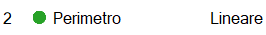
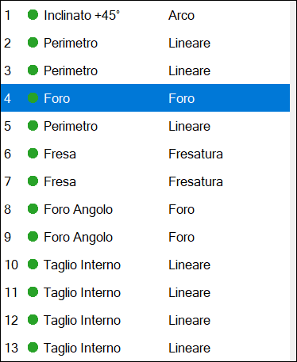
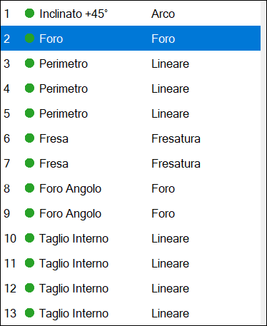
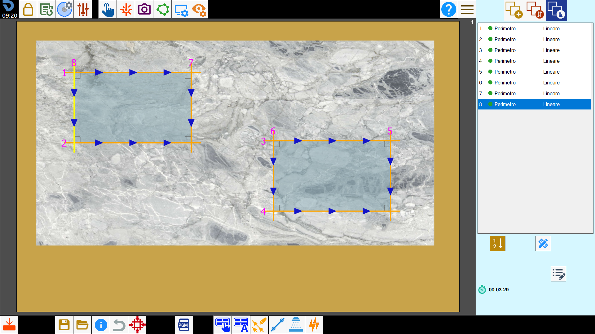
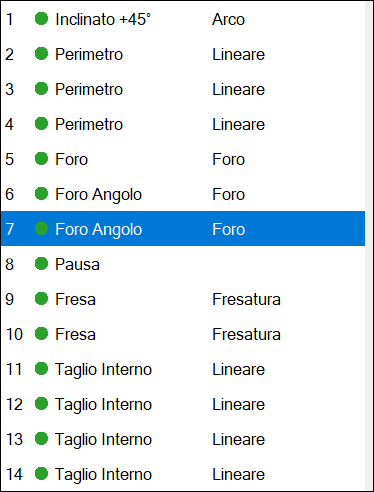

The cuts that the machine must execute are reported inside of this list.
Using the list of cuts, the operator can:
Change the execution order of the cuts.
Modify the features of a cut.
Insert pauses between a cut and the other.

List elements

 | Activate/Deactivate cut |
 | Type cutting |
 | Processing type |
Functions
The arrangement of the cuts in the right list, indicates the order with which they are cut.
With the buttons below, it is possible to modify this order, or insert a pause in the execution of the operations between a cut and the other.
Move with arrows | |
 | Déplacement to desired position |
 | Selection of order from work area |
Pause | |
 | Delete cut |
Modify cut | |
 | Additional piece properties |
At the bottom of the list is also shown:
 | Estimate cutting time |
Move with arrows
With these buttons it is possible to move the selected cut to the upper or lower position.
In the following example you want to move the cut placed in fifth position and move it up one.
Prima dello spostamento | Dopo lo spostamento |
 |  |
Displacement to desired position
This function allows to move the selected element to the position of the list indicated in the adjacent text box.
In this example it is wanted to cover the second position to the fifth cut of the list. It will be necessary to insert the value '2' in the box and subsequently press the button.
Prima dello spostamento | Dopo lo spostamento |
|  |
Selection of order from the work area
Through this function is possible to choose the order of the cuts, directly from the working area.
Pressing the button, the program writes on each cut a number that indicates the position that occupies in the list.

To change its order, click in sequence inside the cut you want to have as first, then the second and so on.
Once finished, press the button again to validate the choice made.
Pause
It is possible to insert a pause between the execution of a cut and the next.
The program will execute all the previous cuts to the pause, then stop the machine and wait the command of Start by the operator.

The pause is always inserted after the execution of the selected cut.
It can be used, for example, to change tool.
Delete Cut
Once the button is pressed, the icon of a rubber is flanked to each voice of the list.
Press then a cut to delete it permanently.